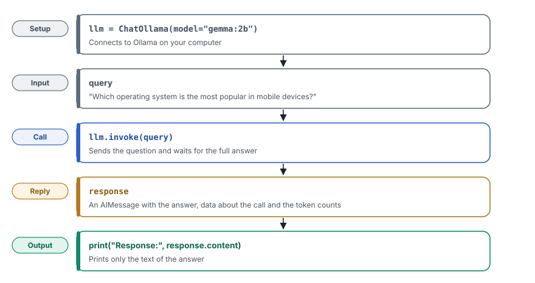

An open-source model can run on your own computer, so that you need no API key and your questions never leave your machine.
What you will learn
- Why you can run a language model on your own computer, and when that is the better choice
- How LangChain connects to a local model through Ollama
- How to send a question with
invoke()and read the answer - What else comes back with the answer, such as the number of tokens
Set up your project first, as Start here shows. You need the gemma:2b model from that setup.
The idea
The best known models, such as Gemini and the models of OpenAI, run on the servers of their companies. To use them, you send your question over the internet with an API key, and you pay for heavy use. For many tasks, this is fine.
Some tasks need a different choice. A question can contain private data, such as customer records or the logs of an app. A team can also want to try many prompts without paying for each one. For such cases, you can run an open-source model on your own computer. An open-source model is a model whose files anyone can download and run, such as Gemma from Google or Mistral.
Ollama makes this easy. It downloads the model, runs it in the background and answers questions on your computer. LangChain then talks to Ollama in the same way as it talks to a cloud model, so the code of your app hardly changes.
A cloud model is like a restaurant. The food is excellent and you need no kitchen, but you pay for each meal and the restaurant sees your order. A local model is like cooking at home. The meal is simpler, but it costs nothing extra. Nobody outside your home knows what you eat.
![Two columns. On the left, a cloud model, used in chapters 1 and 2. Your program, with ChatGoogleGenerativeAI or ChatOpenAI, sends the question over the internet to the Gemini or OpenAI servers, which write the answer. It needs an API key, has large and fast models, and usage can cost money. On the right, a local model, used in this chapter. Your program, with ChatOllama, sends the question to Ollama on your computer at localhost port 11434, and gemma:2b on your computer writes the answer. It needs no API key, the data stays on your computer, and the models are smaller and slower on a laptop.](../../assets/img/diagrams/lc-03-cloud-local.svg)
What you will build
You will build a short program that asks a local model one question and prints the answer. The question is about mobile operating systems, but any question works. The program has only a few lines, so that you can see clearly how LangChain talks to a model.

Build it step by step
Step 1Create the file
In the code folder, create the folder 03_using_ollama and in it the file app_ollama.py.
Step 2Import the model class
from langchain_ollama.chat_models import ChatOllamalangchain_ollamais the LangChain package for Ollama. You installed it with the other packages.ChatOllamais a chat model class. It sends your messages to Ollama and turns the reply into a LangChain message, so that the rest of your code works with any model.
Step 3Create the model
llm = ChatOllama(model="gemma:2b")model="gemma:2b"names the model that Ollama must use. The name must be the same as inollama list.llmis the usual name for the model object. It stands for large language model.- This line does not call the model yet. It only prepares the connection to Ollama on your computer.
Step 4Ask the question
query = "Which operating system is the most popular in mobile devices?"
print("Query:", query)
response = llm.invoke(query)queryholds the question as plain text. The program prints it, so that the output shows the question next to its answer.llm.invoke(query)sends the question to the model and waits until the full answer is ready. Every model class in LangChain has this method, so the same line will work with Gemini and OpenAI.responseis anAIMessage, a message object that holds the answer and data about the call.
Step 5Print the answer
print("Response:", response.content)response.contentis only the text of the answer. You will use.contentin most chapters, because the page shows only the text.
Run it
Make sure that Ollama runs and that the langchain environment is active. Then run the program from the root folder of the project.
python code/03_using_ollama/app_ollama.pyQuery: Which operating system is the most popular in mobile devices?
Response: Android is the most popular operating system in mobile devices, with a market share of over 80%.A language model does not always give the same answer to the same question. Your answer can use other words or another number. The first answer can also take a few seconds, because Ollama must first load the model into memory.
Look closely
The answer is only one part of what comes back. Change the last line to print("Response:", response) and run the program again. The output now shows the full message.
Query: Which operating system is the most popular in mobile devices?
Response: content='Android is the most popular operating system in mobile devices, with a market share of over 80%.'
additional_kwargs={} response_metadata={'model': 'gemma:2b', 'created_at': '2026-06-30T09:55:51.581108758Z', 'done': True,
'done_reason': 'stop', 'total_duration': 814374719, 'load_duration': 93605697, 'prompt_eval_count': 33, 'prompt_eval_duration': 99404120,
'eval_count': 22, 'eval_duration': 610037131, 'logprobs': None, 'model_name': 'gemma:2b', 'model_provider': 'ollama'}
id='lc_run--019f17f4-db6c-77f3-b348-559b6c6ec57f-0' tool_calls=[] invalid_tool_calls=[] usage_metadata={'input_tokens': 33, 'output_tokens': 22, 'total_tokens': 55}contentis the text of the answer, the part that you printed before.response_metadataholds data about the call, such as the model name and the time it took.total_durationis in nanoseconds, so 814374719 is about 0.8 seconds.usage_metadatacounts the tokens. A token is a small piece of text, often part of a word. The question used 33 tokens and the answer 22. Cloud providers charge by tokens, so this count matters in chapters 1 and 2.tool_callsis empty here. In chapter 9, the model will use this field to ask your program to run a tool.
The answer also states a market share of "over 80%" with full confidence. The model wrote a likely number and did not check it. Different sources give different figures, depending on whether they count phones sold or phones in use. Treat a number from a model as a claim that you must check.
Full code of chapter 3code/03_using_ollama/app_ollama.pyView on GitHub
from langchain_ollama.chat_models import ChatOllama
llm = ChatOllama(model="gemma:2b")
query = "Which operating system is the most popular in mobile devices?"
print("Query:", query)
response = llm.invoke(query)
print("Response:", response.content)A local model keeps your questions on your computer, so it suits private data, such as logs or customer records. Two points still need care. Ollama answers on port 11434 and, by default, only on your own computer. Do not open this port to the network, because anyone could then use your model. Also, a small model knows less than a large cloud model, so check its facts before you use them.
Check yourself
Why does a team choose a local model and not a cloud model?
To keep private data on its own computers, and to use the model without an API key or a cost for each question.
What is the difference between response and response.content?
response is the full message with data about the call. response.content is only the text of the answer.
The program shows httpx.ConnectError. What do you check first?
That Ollama runs. Start the Ollama app or run ollama serve.
Key terms at a glance
| Term | Meaning |
|---|---|
| Open-source model | A model whose files anyone can download and run, such as Gemma or Mistral |
| Ollama | A tool that downloads and runs language models on your own computer |
ChatOllama | The LangChain class that sends messages to a model in Ollama |
invoke() | The method that sends a question to any LangChain model and returns the answer |
AIMessage | The message object that holds the answer and data about the call |
| Token | A small piece of text that a model reads or writes, often part of a word |
For a deeper look at the reply of a model, see AI Engineering chapter 1.
Next
Your program can now talk to a model, but only in the terminal. In chapter 4, you will put a web page in front of the model, so that anyone can use it in a browser.